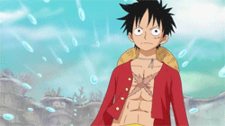
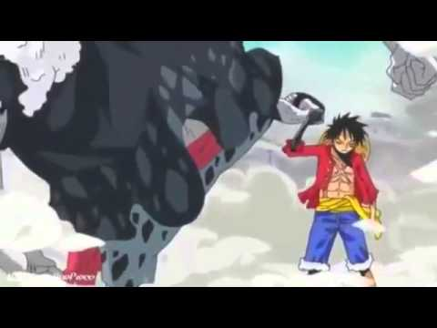
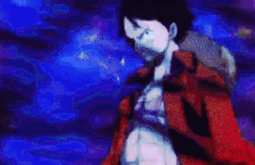

Background
Haki is a fictional ability in the world of One Piece, a manga written by Eiichiro Oda. Its English translation can mean "ambition", "will power", "drive", "spirit", "vigor" and "aspiration" to name a few. It is one of the longest running and most successful manga/anime franchises ever. Monkey D. Luffy and his crew are on an adventure traversing the Grand Line to find the One Piece, a treasure left by the kind of pirates Gol D. Roger. There are three types of haki: Observation, Armament, and Conqueror's. Generally, when training to unlock your haki the user will find that they have an affinity for either Observation or Armament. For example, Coby and Sanji are naturally more proficent with Observation whereas Zoro was a natural with Armament.
Observation Haki
Observation Haki is the ability to percieve the world around you in a heightened way. In the Skypiea arc, whenever the sky people used something called "Mantra", they were using a low level form of Observation Haki and this is the first foreshadowing of the power. Often, people with this power refer to sensing those around them as "hearing their voice". This is similar to other manga when you hear them talking about sensing someone's "ki", "life energy", or "chakra".
At a low level, it can be used to sense everyone around the user within a certain distance and help them predict how their opponent will move. As the ability is further developed, the range increases as well as the user's ability to predict their opponents moves. At a medium level they can dodge a barrage of bullets. At a high level, the ability to predict the enemy's behavior is so advanced, users can peer a few seconds into the future.
Armament Haki
Armament Haki is used to to harden/strengthen your body or objects that you can touch. This is both an offensive and defensive ability because it allows the user to harden something as fragile as a stick into a rock-hard object or they can harden the part of their body that's about to receive a blow to lessen the impact. Armament Haki is first foreshadowed by CP-9 with their "Iron Body" ability. This however, is a very low level version of the ability as their skin doesn't change colors and they have to focus so hard they cannot move their bodies.
Mid-level Armament Haki is great for enchancing physical blows and sword swings. Recently, a new level of this Haki was shown called Ryou. This sends Haki from the user into the enemy at close range and deals massive internal damage to a foe. This will be a deciding factor for the battle with Kaido coming up soon.
Conqueror's Haki
This is the ultimate Haki given only to the chosen ones by fate. This Haki uses the willpower of the wielder as a weapon. When used, it's given off like a shockwave, completely knocking the weak-willed unconscious. Those with stronger wills can be stunned, but those with wills of steel are unaffected. This ability was first foreshadowed whenever Luffy tames a charging bull with just an intense stare.
The Haki of the Supreme King is still somewhat of a mystery, however it will be essential for Luffy and the crew to finish up their long adventure. Some noteworthy Conqueror's Haki users include Luffy, Edward Newgate, Gol D. Roger, Roronoa Zoro, Kaido, Boa Hancock, and Kozuki Oden. Everyone who can use this ability has drastic effects on global events around the world.
